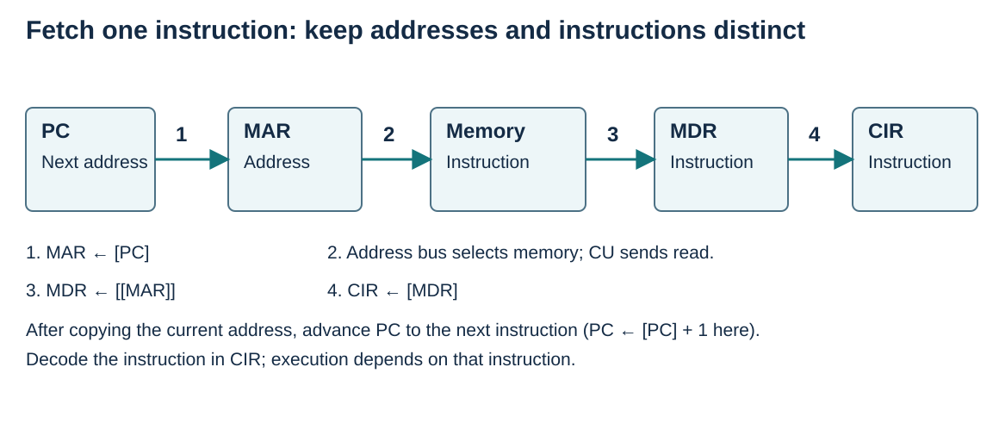

Fetch using register-transfer notation
Visual overview
Instruction fetch: address and value transfers

Visual transcript
- MAR ← [PC] selects the instruction address.
- A read signal causes MDR ← [[MAR]].
- CIR ← [MDR] retains the fetched instruction.
- PC ← [PC] + 1 advances the sequential address independently of the instruction transfer.
Core explanation
Follow the instruction address
In this notation, [PC] means the contents of PC and [[MAR]] means the contents of the memory location whose address is in MAR. The arrow points towards the destination. MAR ← [PC] therefore copies the next instruction address into MAR.
Move the instruction into CIR
The CU issues a memory-read signal; the instruction from the selected location travels to MDR and is copied to CIR. PC advances to the next sequential address. For these examples each instruction occupies one location, so the increment is one. Some fetch operations can overlap; the instruction must reach MDR before it can be copied from MDR to CIR.
Worked example · Fetch from address 200
- Given
PC=200; Memory[200] contains LDD 700; instructions occupy one location.
- Address and read
MAR ← [PC] gives 200. After the read signal, MDR ← [[MAR]] gives LDD 700.
- Retain and advance
CIR ← [MDR] retains LDD 700. PC ← [PC] + 1 gives 201.